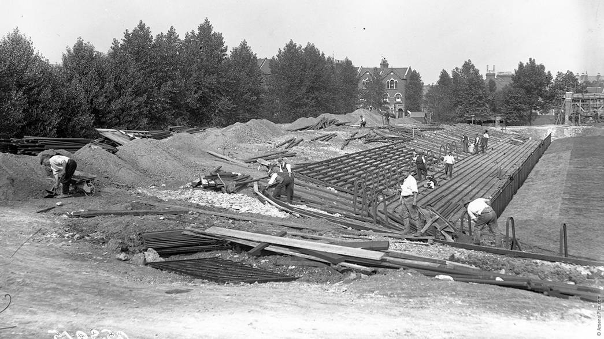
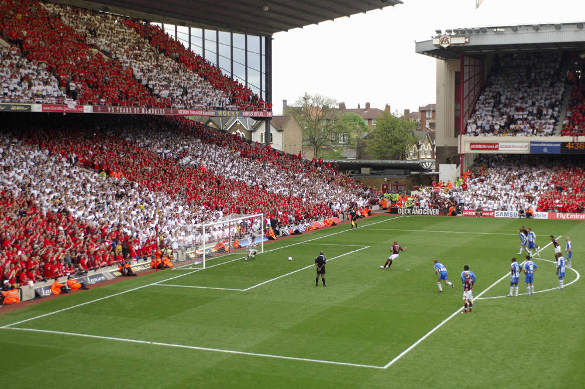
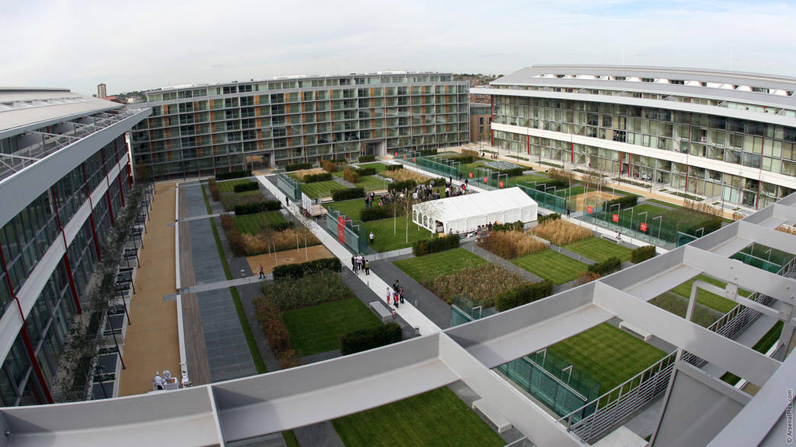

Home of the Arsenal Football Club, the Emirates Stadium is a football stadium in Holloway, England. It was known as Ashburton Grove prior to sponsorship deal with Emirates.
Emirates Stadium is also known as Arsenal Stadium for UEFA competitions. It is the third largest football stadium in England with a capacity of 59,867.
History
In 2006, the project to build the entire stadium was completed at a cost of $390 million which was capable of hosting international fixtures and music concerts.
After development proposals and finance procedures, the Emirates Stadium was officially opened by Prince Philip Duke of Edinburgh on 26 October 2006.
Major matches
The stadium has been a host for a number of international friendly matches. Interestingly, the Brazilian national team has been a part of all of them.
It hosted a Premier League match of Arsenal against Manchester United on 3 November 2007 which recorded the highest attendance in Emirates stadium for a Premier League match.
The highest attendance recorded at the stadium was about 60,500 for a match between the hosts and Tottenham Hotspur in February 2012.
UEFA Champions League matches are also hosted in Emirates Stadium.
Funding and Naming Rights
Arsenal secured a $260 million loan from a group of banks led by the Royal Bank of Scotland whereas the remaining amount was arranged by other means as the construction cost of building the stadium was estimated at $400 million.
The naming rights of the stadium was bought by Emirates at an estimated cost of $100 million for a 15-year deal. The former name of the stadium was Ashburton Grove, which is used by some supporters even today.
Renovation and Maintenance
The capacity of the stadium has been reduced recently due to safety reasons and improvements in facilities for disabled supporters.
To add an extra 780 seats to their club Level areas, Arsenal will start a two-stage renovation project which will take place over the summers of 2018 and 2019. The stadium will hold over 60,600 spectators after completion.
Spirit of Highbury : the legacy of Arsenal
Highbury was Arsenal's home from 1913 to 2006. It was the stadium which was built when Arsenal moved to North London early in the 20th century as they grew bigger and better. After being rebuilt in 1930, it became one of England's finest stadiums.
All of the Gunner's 13 first division premier league titles and 10 FA cups that Arsenal have won in their history, were in the Highbury era and after Old Trafford and Anfield, had the richest history.
From Chapman to Adams, to Wenger to Henry, this iconic stadium had seen many such greats who had done wonders for the club. The stadium also was the home of generations of great football teams who played under the crest of the cannon. Players came and went, jersey colors changed and fans born and died, but the passion of the gooners has carried on from Highbury into the Emiates stadium.
It was the stadium which saw the boring but reliable defensive minded Arsenal team transformed into a team weaving triangles and parallelograms around the opposition dancing with the ball on the football pitch, poking around for gaps and finally when one was found, slice the defense with a definitive pass into the legs of one the league's best strike partnerships, who more often than not, put the ball in the back of the net. This mindset is what made Arsenal both different and feared in Europe during the Henry era and still continues to enthrall supporters worldwide.
It was a loss to leave Highbury but the pressures to do so were too great. With an ever-expanding fan base in England and rest of the world, the quaint 35000-seater for a club of Arsenal's stature was no longer in the question. Then came public opposition to expand the ground so it was decided that Arsenal move out of Highbury into Ashburton grove.
But highbury has not been forgotten, a process of 'Arsenalisation' of the Emirates stadium was begun to fill the void left by the departure from Highbury. Seats were painted so as to form a symbol of the cannon, murals celebrating the greatest moments in the club's history were commissioned inside and outside the stadium. The stands were renamed so as to bring back memories of the original North Bank stand and Block stand and most importantly, the original clock from Highbury's clock end was shifted into the Emirates where it would remain forever.
Those lucky enough to have visited the Emirates would have also seen the Spirit of Highbury shrine which depicts every player ever to have played at highbury for Arsenal.
The deeper the foundation, the stronger the fortress : spirit of Highbury shrine.

Contruction
The first match was a 2-1 victory over Leicester Fosse, on September 6, 1913, with the stadium not entirely complete.

Last match
In a fitting send off, Thierry Henry scored a hattrick as Arsenal beat Wigan Athletic 4-2 to secure a UEFA Champions League spot, at the expense of North London rivals Tottenham Hotspur.

At Present
The London site was then redeveloped for housing,with 711 flats being created in what is now known as Highbury Square.The once-famous pitch is now a communal garden at the centre of the development.